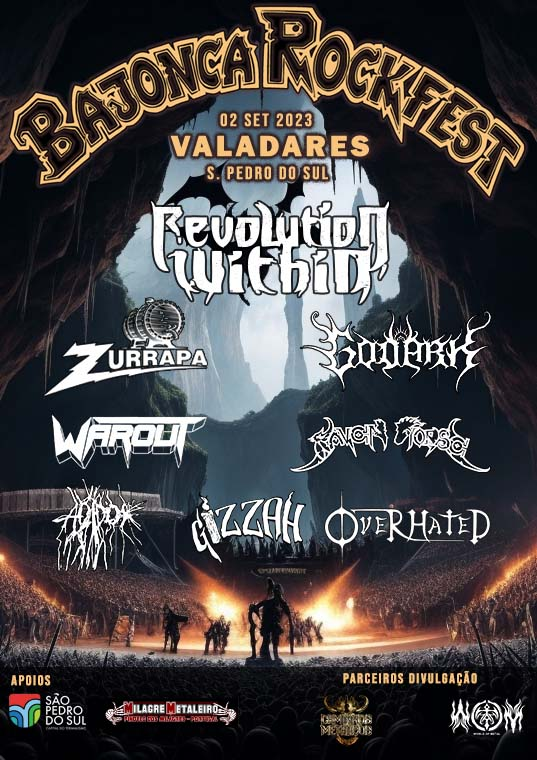
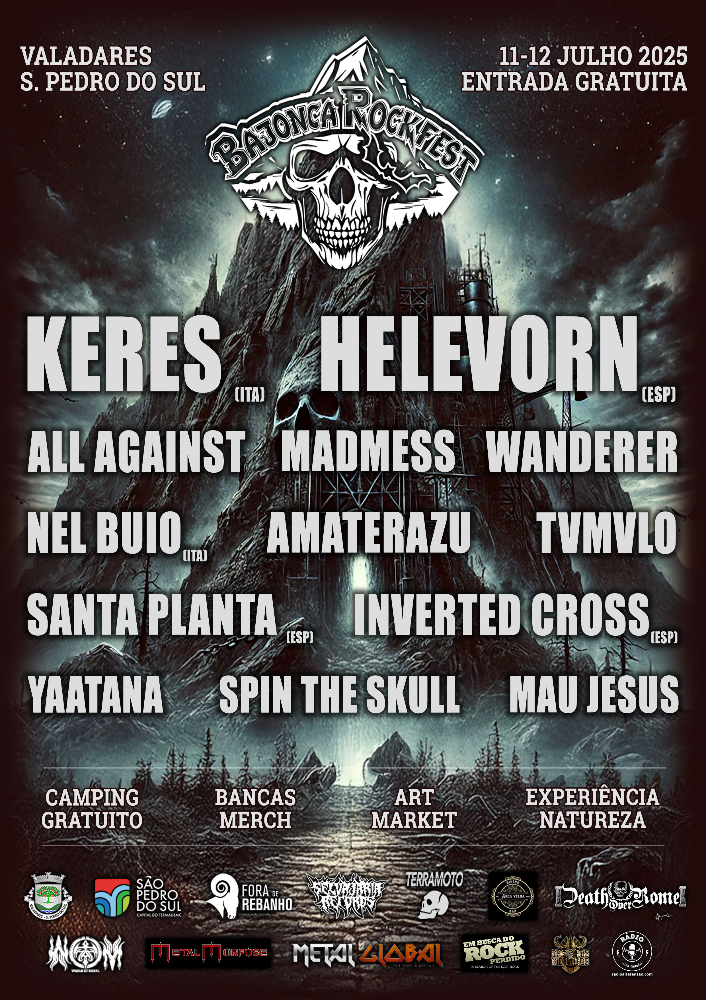
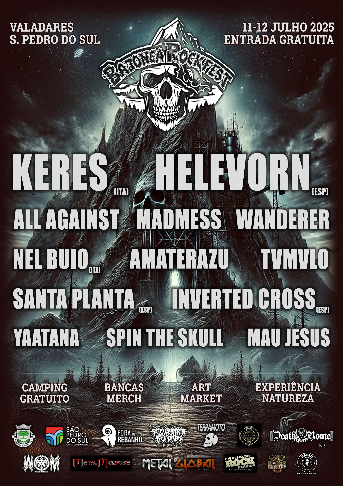

CARTAZ


UNDEAD
Death Metal - Espanha


Em estreia absoluta em Portugal, os Undead são um dos maiores nomes do Death Metal espanhol. Death metal visceral e brutal, com uma produção moderna e agressiva, os Undead trazem uma energia única aos seus concertos.

WET CACTUS
Stoner Rock - Espanha
Os lendários Wet Cactus são um dos maiores expoentes do Stoner Rock espanhol. Com riffs pesados e grooves cativantes, os Wet Cactus trazem energia massiva ao palco do Bajonca. Influências desde o rock psicadélico anos 70 até ao stoner moderno, concerto intenso e envolvente.
FOSCOR
Post Black Metal - Espanha
De regresso a Portugal a histórica banda de black metal espanhol vem festejar o 25º aniversário desde o primeiro lançamento com um set muito especial que promete ser uma viagem intensa pelos primeiros lançamentos da banda. Com uma sonoridade que mistura a agressividade do black metal com atmosferas melancólicas e progressivas, este concerto será histórico.

SPEEDEMON
Heavy/Speed/Thrash - Portugal
Os Speedemon dispensam apresentações em Portugal. A banda que, já representou o país no Wacken, traz na bagagem o aclamado Fall Of Man. Com uma sonoridade que mistura elementos de heavy, speed e thrash metal, os Speedemon são uma banda que promete um concerto cheio de energia e atitude. Com riffs rápidos e potentes, solos de guitarra electrizantes e uma performance energética, os Speedemon vão fazer o público vibrar do início ao fim do concerto.


BESTA
Grindcore - Portugal
Reduzir os Besta ao rótulo de Grindcore é, na realidade, uma tremenda injustiça ao que a banda produz em palco. Com uma sonoridade que mistura elementos de grindcore, death metal e hardcore, a banda é uma BESTA em palco com riffs rápidos e potentes, vocais agressivos e uma performance energética, os Besta vão fazer o público vibrar do início ao fim do concerto.

LÓSTREGOS
Pagan Black Metal - Espanha
Os galegos Lóstregos são uma pérola do black metal pagão espanhol e internacional, com sonoridades que vão desde o Black Metal seminal ao melódico e até mesmo ao atmosférico, o concerto da banda é uma viagem intensa e envolvente por paisagens sonoras que evocam a natureza, a mitologia e a história da Galiza. Com uma presença de palco cativante e uma sonoridade única, o concerto da banda será uma experiência inesquecível para os amantes do género e para todos aqueles que apreciam música intensa e emocional.
CRUZEIRO
Stoner/Doom - Espanha
Os galegos Cruzeiro são uma das maiores revelações do stoner doom espanhol dos últimos anos. Com uma sonoridade que mistura riffs pesados e atmosferas densas, os Cruzeiro trazem uma energia única ao palco do Bajonca. Com influências que vão desde o doom clássico até ao stoner moderno, os Cruzeiro são uma banda com um concerto intenso e envolvente.

MURMUR
Post Black/Doom/Death - Espanha
Pela primeira vez em PT! Os Murmur são a nova grande revelação do post black/doom/death espanhol. De desgustação densa, atmosférica, a mistura de black, doom e death origina uma experiência arrepiante e corrosiva. A melancolia e a brutalidade coexistem de forma magistral, criando um concerto que promete ser uma viagem intensa e emocional por paisagens sonoras sombrias e envolventes.


JARDA
Thrash N' Roll - Portugal
JARDA NATION!!! Thrash n' roll de partir a cabeça, velocidade suprema e riffs que não dão descanso. Brita imensa de energia e atitude, os Jarda prometem adrenalina e diversão do início ao fim do concerto, com uma performance que vai fazer o público vibrar e cantar em uníssono. Cowboyada máxima!

RAGEFUL
Death Metal - Portugal
Quando os Rageful sobem ao palco, o sangue do público ferve! Numa mistura de Death Metal Old School com Death Metal moderno, os Rageful trazem uma energia brutal e uma técnica impressionante que não vai deixar os fãs de metal indiferentes. Com riffs pesados, vocais agressivos e uma presença de palco intensa, os Rageful prometem rebentar o palco do Bajonca.
EL SAGUARO
Stoner/Blues Rock - Portugal
Os rock psicadélico e stoner dos El Saguaro é uma viagem agradável pelas paisagens sonoras do deserto, com riffs pesados e grooves hipnóticos que evocam a vastidão e a mística do sudoeste americano. Este trio português é uma das maiores revelações do stoner/blues rock nacional dos últimos anos.

DANGER MACHINE
Heavy/Speed - Portugal
Danger Machine é rebeldia, é culto ao senhor das trevas e é uma máquina de heavy/speed metal que não para de acelerar. Velocidade e irreverência é o que esta jovem banda alentejana vai levar ao palco do Bajonca.


SPIRAL SPUTNIK
Rock - Portugal
Os Spiral Sputnik jogam em casa! Banda recentemente formada mas já com um aclamado disco lançado, "Noir Déluge" é uma viagem pelo rock mais denso, com nuances grunge e punk rock e até uma pitada de doom, este quarteto viseense está pronto para conquistar palcos grandes! Temos o privilégio e orgulho de os receber.
HORÁRIOS
Info disponibilizada em breve.
ART MARKET
Info disponibilizada em breve.
COMO CHEGAR
INFO
- Data: 10 e 11 de Julho de 2026
- Local: Valadares, São Pedro do Sul, Viseu, Portugal
- Entrada: Gratuita
- Campismo: Gratuito com balneários de duches quentes, disponivel de 9 de Julho a 12 de Julho
- O recinto do festival é arborizado e, consequentemente, dotado de sombra.
- O espaço é amplo e privilegiado com uma vista única sobre a serra envolvente, proporcionando um ambiente natural e relaxante para os festivaleiros.
- Há barracas de merch, comida e bebida, e uma zona de chill-out para quem quiser descansar entre concertos.
- Serviremos jantar no dia 10. No dia 11 haverá refeições e comida desde o pequeno almoço até ao fim da noite.
- Teremos um art market com artistas a expôr e vender as suas obras.
- Nas bancas do festival é aceite pagamento por Multibanco, MBWay e dinheiro.
- O ATM mais próximo só é possível alcançar de carro.
- O festival é pet-friendly, ou seja, os animais de estimação são muito bem-vindos, desde que estejam devidamente controlados e acompanhados pelos seus donos.
- Nas redondezas do festival não há lojas, cafés ou supermercados.
Dúvidas ou mais informações, contacta-nos através do email institucional: bajonca.acr@gmail.com
Info disponibilizada em breve.
PARCEIROS
Info disponibilizada em breve.
EDIÇÕES ANTERIORES

 

SOBRE NÓS
A Bajonca - Associação Cultural e Recreativa é uma entidade sem fins lucrativos, fundada em 2021 por um grupo de amigos apaixonados por música e cultura alternativa.
O nosso objetivo é criar um espaço de encontro e celebração da música, arte e cultura, promovendo eventos que valorizem a diversidade e a criatividade.
Acreditamos que a música é uma forma poderosa de expressão e conexão, e queremos proporcionar experiências únicas e memoráveis para o nosso público.
Junta-te a nós!
Email institucional: bajonca.acr@gmail.com
Email booking bajonca.booking@gmail.com